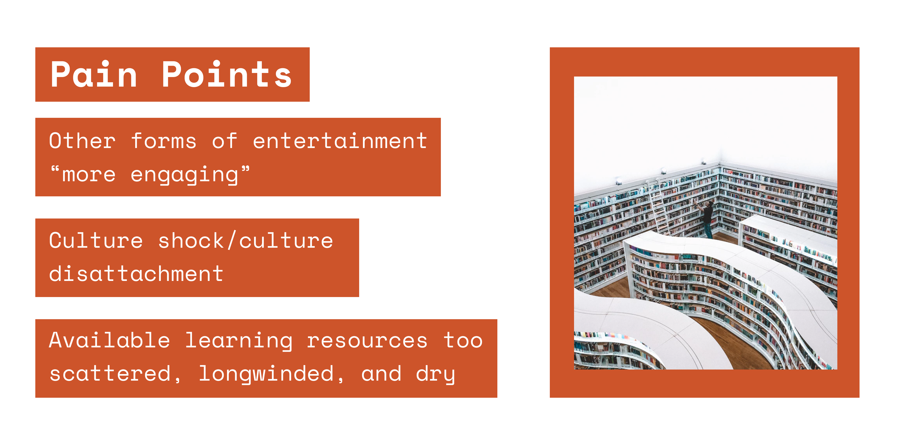
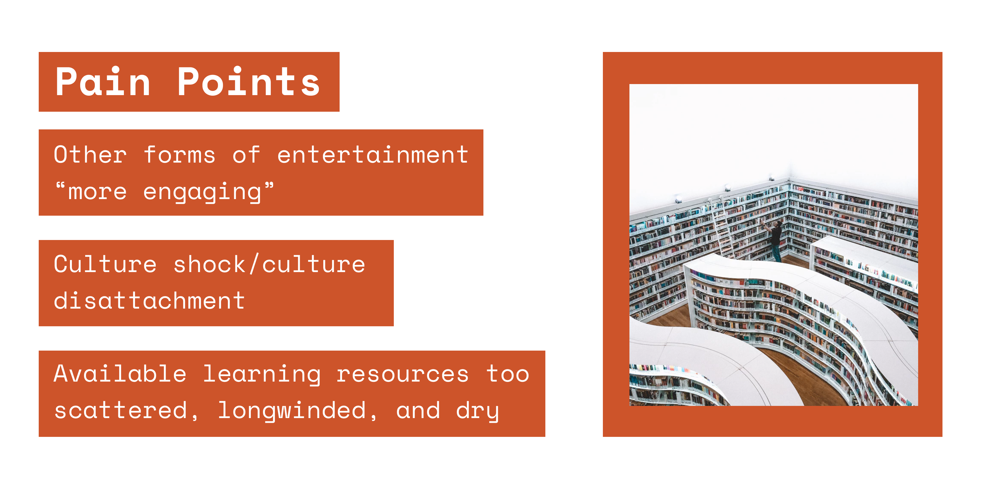

literatura
literatura is a mobile app designed to promote the discovery and facilitate the study of classical works of
literature.
The app uses a collection of summaries and quizzes to help the user better know and understand important plot
points and themes of each novel.
literatura is a project worked on independently, from initial research to development.
Project Type: Personal Timeline: Winter 2019 Tools: Figma, Marvel
Project Type: Personal Timeline: Winter 2019 Tools: Figma, Marvel

Problem
There exists a vast number of works of classical literature that are culturally significant and worth
studying/understanding.
However, in this day and age, the only real exposure most students get is through the few books they are
forced to read in their high school English courses.
Despite increased accessibility to these books, the interest in them has been declining. This decline can have
severe impacts on a young person's ability to comprehend
the world around them, think critically and become involved in society.


User Research
To better understand the target audience, I surveyed peers on their experiences in high school English, as
well as past high school English teachers. Through these surveys,
I tried to get a sense of what made high school English classes insufficient in terms of "getting students
into classical literature"
and why the students themselves were unmotivated to study the novels assigned to them, much less go on their
own and discover new ones. In the end, I came upon these key insights:
1. Considering the digital age we are currently in, many surveyees simply found other forms of electronic
entertainment more enjoyable and easy to consume, creating instant gratification. These included TV
shows/movies, video games, and social media.
2. Building off of that, the world of classical literature seems foreign and strange, far removed from our modern world, causing a sense of unfamiliarity and fear for the majority of students.
3. Even if a student decides to venture out into the world of classical literature, they can waste a lot of time digging through countless Wikipedia, Goodreads, Sparknotes, etc. articles, which can be confusing and discouraging, and not at all exciting.
2. Building off of that, the world of classical literature seems foreign and strange, far removed from our modern world, causing a sense of unfamiliarity and fear for the majority of students.
3. Even if a student decides to venture out into the world of classical literature, they can waste a lot of time digging through countless Wikipedia, Goodreads, Sparknotes, etc. articles, which can be confusing and discouraging, and not at all exciting.
The takeaway here is that there is a large disconnect between the cultures of various time periods (in which
classical literature was written) and now. On top of that, there is no easily accessible/centralized hub for
all of the information for the few students that might want to have a go at studying classical literature.
These two factors result in a very discouraging and uncomfortable environment for young people
studying/attempting to study literature.
Design Process
Considering the above factors, the solution must:
a) Reframe classical literature in way where it can be integrated with modern culture and the digital age, providing gratification and comfort in a similar way
b) Provide a centralized and accessible hub that is easy for a student to navigate and understand, with the least amount of friction/time wasted.
Considering the fact that nearly every student now has a phone, it made sense to use a mobile app as the platform for this solution. I started drafting UI wireframes for the app on paper, including screens for information on books/authors (to inform) and screens for quizzes (to gamify and provide instant gratification). I got too excited and created some high-fidelity mock-ups right away in Figma, as seen below:
In hindsight, I was too hasty. I dove headfirst into Android Studio and started developing. While doing so, the lack of further planning and iterations became a large frustration. I ended scrapping the design entirely and starting from scratch. I redid the UI wireframes, along with a user flow diagram, and added the ability to "favourite" books, as an encouragement of sorts to actually go and read the book in the future.

a) Reframe classical literature in way where it can be integrated with modern culture and the digital age, providing gratification and comfort in a similar way
b) Provide a centralized and accessible hub that is easy for a student to navigate and understand, with the least amount of friction/time wasted.
Considering the fact that nearly every student now has a phone, it made sense to use a mobile app as the platform for this solution. I started drafting UI wireframes for the app on paper, including screens for information on books/authors (to inform) and screens for quizzes (to gamify and provide instant gratification). I got too excited and created some high-fidelity mock-ups right away in Figma, as seen below:
Ill-advised first attempt at mock-ups in Figma
In hindsight, I was too hasty. I dove headfirst into Android Studio and started developing. While doing so, the lack of further planning and iterations became a large frustration. I ended scrapping the design entirely and starting from scratch. I redid the UI wireframes, along with a user flow diagram, and added the ability to "favourite" books, as an encouragement of sorts to actually go and read the book in the future.
Initial UI concept and flow on paper
Style Guide
With a new design came a new color palette and fonts, this time with a set guide to prevent further
frustrations. The color palette is mostly greyscale, with rustic brown accents to invoke the experience of
reading an old book.
I opted for Gills Sans as the font, calling upon the work of typographer Jan Tschichold when he came up with
composition rules for publisher Penguin Books. The modern interface provides familiarity, while the typeface
and colors
create a cozy, vintage, time-honored feel. During the quiz, the user will get alerts, which should be exciting
and gratifying, but muted enough to fit in with the rest of the colors.

Style guide used to aid with consistency
Final Design
I created a high fidelity prototype using Figma, then used Marvel to further communicate animations and user
flow.

Screens made with Figma
Prototype in Marvel
Development and Next Steps
Development on literatura for Android is ongoing, you can check it out on my GitHub! I used a custom API for the quiz questions and
answers
and Open Library API to fetch book covers and book information.
There are plans to port it to iOS to further improve accessibility. Future features may include leaderboards
and rewards to incentivise learning, and a recommendations system similar to Spotify's "Discover" feature.
next →